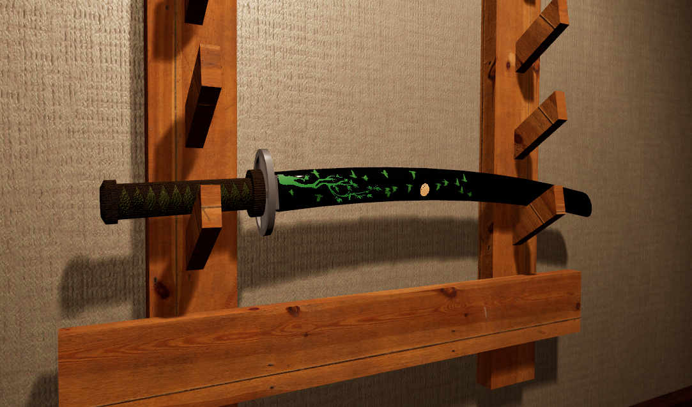
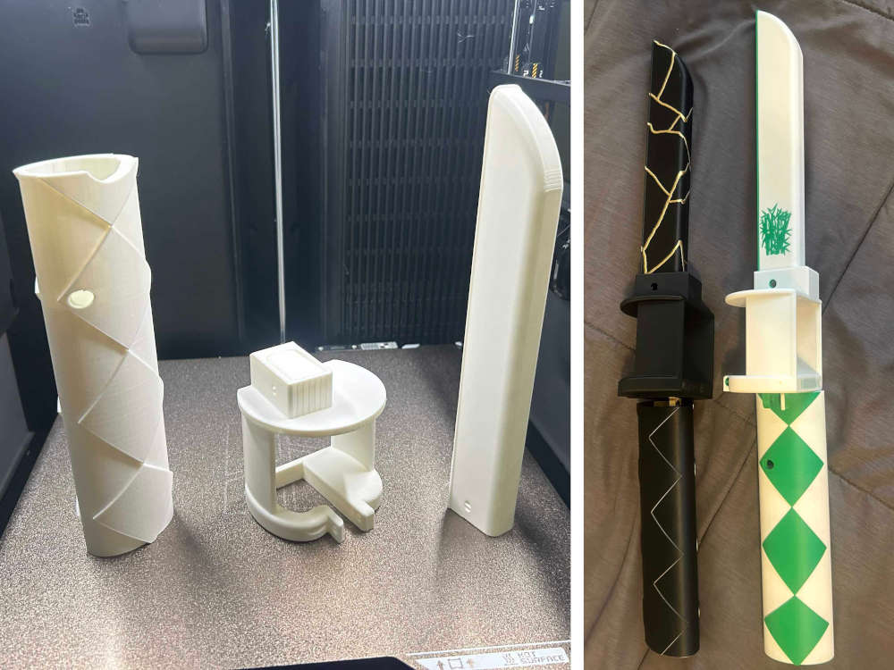
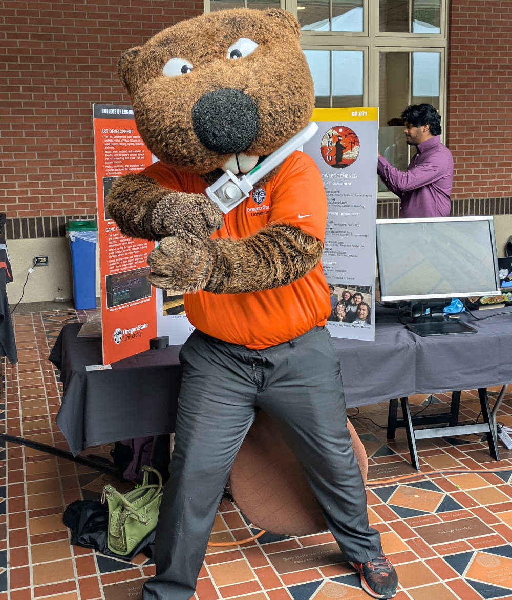

An immersive, fun VR experience teaching newcomers traditional Japanese swordsmanship
project overview
The Japanese sword arts, kenjutsu, are a difficult practice to enter. VRyu is a fun, gamified introduction for beginners to the field. Through tightly designed gameplay and tasteful visuals, we aim to spark curiosity and excitement for this martial art and its associated culture.
slicing

VRyu is designed around a central verb: cut. You practice by cutting bamboo, you cut flying watermelon, you cut your humanoid opponents made of wood, and when they try to attack, you cut them right back! The sword arts are about focus, practice, and attention, which is why we have designed every player interaction to center on bettering their own cutting skills..
aesthetics

The game takes place in a realistic dojo scene handcrafted by our art team, the place where one might traditionally learn kenjutsu. It, along with the rest of the game's assets, were inspired by a mix of authentic iconography from Japanese culture.
combat

As the game's finale, the player must use all their learned skills to attack and block a humanoid enemy styled after a mannequin, seen above. This simulates the act of sparring with a training partner, an essential practice for training key swordsmanship skills.
philosophy

The game ends in a lovingly crafted side room to the dojo, complete with a ceremonial tea set and incense. With this, we dispel the myth that sword arts are about violence by showing the more peaceful and disciplined core of their related philosophies.
peripheral

We collaborated with a mechanical engineering team who produced a fully 3D-printable controller attachment to make gameplay more immersive. Players can feel the heft of a real katana while practicing cuts!
engineering expo

VRyu is Benny approved! On June 5th 2026, we demoed our project at OSU's Engineering Expo. Here's a link to our poster.
download & links
- Game Downloads
- Itch.io Page
- GitHub Repository
Downloads for all platforms of the most up-to-date version of the game and the controller peripheral.
Alternate download and project front-end on the video game hosting site itch.io.
Contains more info about our project, and every project file used in the game.
credits
Art Development
- Téa Kidder - Email, LinkedIn
- Dylan Keyhantaj - Email, LinkedIn
3D Assets & 2D Art, Enemy System, Scene Staging
3D Assets, Scene Staging, Design, Team Org
Game Development
- Reed Evertt - Email, Portfolio
- Cade Wisecaver - Email, LinkedIn
- Sunil Jain - Email, LinkedIn
- Dennis Aguilar - Email, GitHub
Design, Cutting, UI, Managers, Team Org
Player Movement, Sound System, Programming
Design, Cutting, Scoring, Kenjutsu Researcher
Design, Sound Effects, Particles, Physics
Project Partners
- Ben Rayack
- Kirsten Winters
Team Stakeholder, Kenjutsu Consultant
Team Mentor, Senior Capstone Instructor